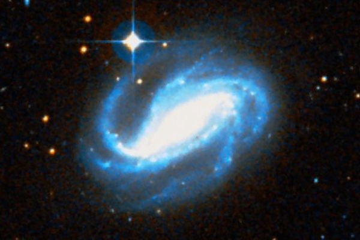
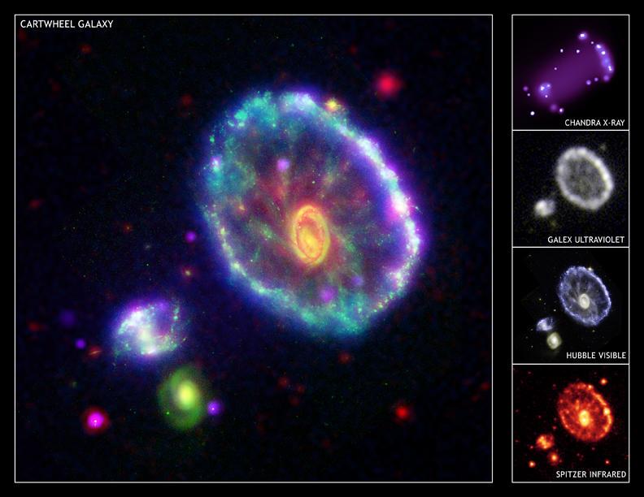

Латинское название: Sculptor
Он "открыл статуям глаза и отделил руки и ноги" - я не помню, откуда эта цитата, но это о Дедале. Этот древний инженер был еще и скульптором, именно он начал вырезать открытые глаза на лицах статуй и вырубать руки и ноги отдельно от туловища и друг от друга, так что скульптуры стали походить на людей, а не на каменные глыбы "неолитических венер".
Именно это, а не крылья, изобретенные Дедалом, послужило причиной, почему мастер оказался среди созвездий.
Живописная спиральная галактика с эффектными рукавами и пылевыми волокнами.
...или, прозаично, Колесо Телеги - уникальное кольцевое образование, образовавшееся в результате столкновения двух галактик в Группе Скульптора и их активного гравитационного взаимодействия.
